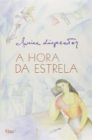

Clarice Lispectos: Hora da Estrela
“A Hora da Estrela” é o último romance da escritora brasileira Clarice Lispector, publicado em 1977. Trata-se de uma obra instigante e original, de cunho autobiográfico, pertencente à Terceira Geração Modernista. É classificada como um romance intimista, também conhecido como romance psicológico, estilo em que a autora se destaca. Afinal, a obra de Clarice é marcada por suas emoções e sentimentos pessoais.
Machado de Assis: Memórias Póstumas de Brás Cubas

Em 1881, Machado de Assis lançou aquele que seria um divisor de águas não só em sua obra, mas na literatura brasileira: Memórias póstumas de Brás Cubas. Ao mesmo tempo em que marca a fase mais madura do autor, o livro é considerado a transição do romantismo para o realismo. Num primeiro momento, a prosa fragmentária e livre de Memórias póstumas, misturando elegância e abuso, refinamento e humor negro, causou estranheza, inclusive entre a crítica. Com o tempo, no entanto, o defunto autor que dedica sua obra ao verme que primeiro roeu as frias carnes de seu cadáver tornou-se um dos personagens mais populares da nossa literatura. Sua história, uma celebração do nada que foi sua vida, foi transformada em filmes, peças e HQs, e teve incontáveis edições no Brasil e no mundo, conquistando admiradores que vão de Susan Sontag a Woody Allen.